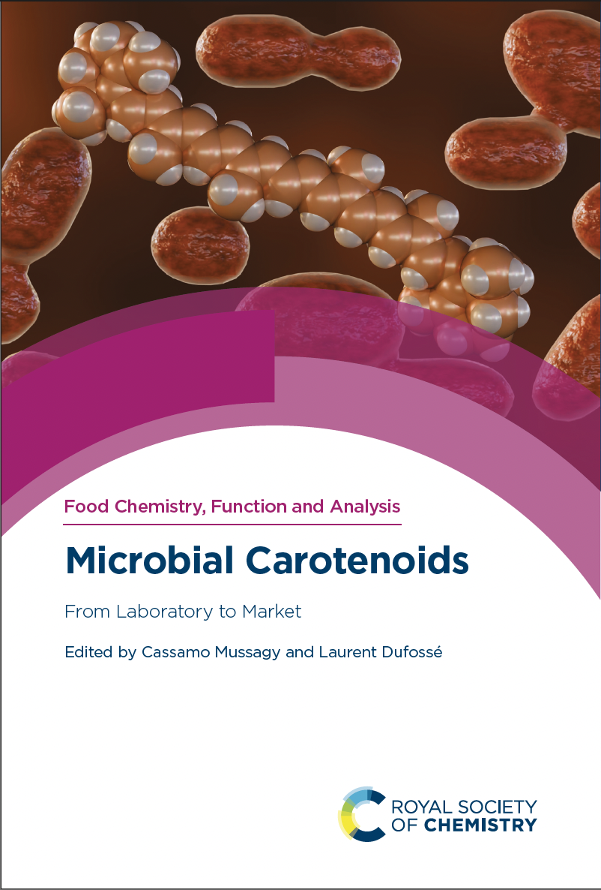

Libro editado · 2026
Microbial Carotenoids: From Laboratory to Market
Editado por Cassamo Mussagy y Laurent Dufossé. Food Chemistry, Function and Analysis, volumen 50. Royal Society of Chemistry.
RSC · 2026Volumen 50Volumen editado
Ver libro en la RSC ↗